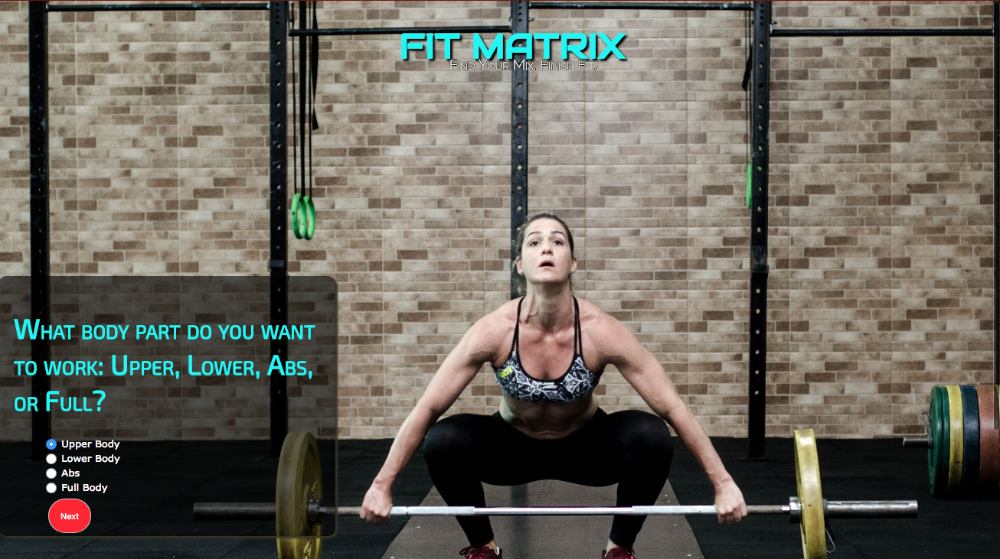

Fit Matrix App
Project Aim: To build a customizable fitness app based on classic, time-tested exercise progression techniques of working your largest muscles first, then move on to the smallest muscles, for maximum workout efficiency. I do this using JSON sorting and other search algorithms.

Features: I am focusing on the UX/UI of this product to make it as easy and as all-in-one to use. I've added a built-in workout timer usign JavaScript and I call on the YouTube API in order to populate movement demos, based on user search, right within the app if users need them. The problems these features solve: Many general fitness apps show premanufactured workouts in a random order that’s not necessarily optimized for results, working your largest muscles to smaller muscles. I want to create a randomized, yet customizable, workout app based on the best training principles.
Key features: Customizable, but randomized exercises from my own (soon to be open-sourced) JSON file, credited image demos, complex workout timers, and at trio of (non-explicit) Youtube API videos for workout move demos right in-app. Technologies I'm using: YouTube API, JavaScript, Ruby on Rails, created my own fitness JSON database. See the private GitHub repository.